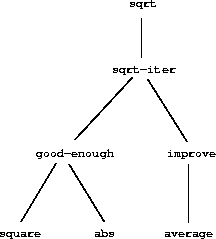

SICP Book Chapter 1
Table of Contents
- 1. Building Abstractions with Procedures
- 1.1. The Elements of Programming
- 1.1.1. Expressions
- 1.1.2. Naming and the Environment
- 1.1.3. Evaluating Combinations
- 1.1.4. Compound Procedures
- 1.1.5. The Substitution Model for Procedure Application
- 1.1.6. Conditional Expressions and Predicates
- 1.1.7. Example: Square Roots by Newton's Method
- 1.1.8. Procedures as Black-Box Abstractions
- 1.1. The Elements of Programming
1 Building Abstractions with Procedures
| The acts of the mind, wherein it exerts its power over simple ideas, are chiefly these three: 1. Combining several simple ideas into one compound one, and thus all complex ideas are made. 2. The second is bringing two ideas, whether simple or complex, together, and setting them by one another so as to take a view of them at once, without uniting them into one, by which it gets all its ideas of relations. 3. The third is separating them from all other ideas that accompany them in their real existence: this is called abstraction, and thus all its general ideas are made. |
| John Locke, An Essay Concerning Human Understanding (1690) |
We are about to study the idea of a computational process. Computational processes are abstract beings that inhabit computers. As they evolve, processes manipulate other abstract things called data. The evolution of a process is directed by a pattern of rules called a program. People create programs to direct processes. In effect, we conjure the spirits of the computer with our spells.
A computational process is indeed much like a sorcerer's idea of a spirit. It cannot be seen or touched. It is not composed of matter at all. However, it is very real. It can perform intellectual work. It can answer questions. It can affect the world by disbursing money at a bank or by controlling a robot arm in a factory. The programs we use to conjure processes are like a sorcerer's spells. They are carefully composed from symbolic expressions in arcane and esoteric programming languages that prescribe the tasks we want our processes to perform.
A computational process, in a correctly working computer, executes programs precisely and accurately. Thus, like the sorcerer's apprentice, novice programmers must learn to understand and to anticipate the consequences of their conjuring. Even small errors (usually called glitches) in programs can have complex and unanticipated consequences.
Fortunately, learning to program is considerably less dangerous than learning sorcery, because the spirits we deal with are conveniently contained in a secure way. Real-world programming, however, requires care, expertise, and wisdom. A small bug in a computer-aided design program, for example, can lead to the catastrophic collapse of an airplane or a dam or the self-destruction of an industrial robot.
Master software engineers have the ability to organize programs so that they can be reasonably sure that the resulting processes will perform the tasks intended. They can visualize the behavior of their systems in advance. They know how to structure programs so that unanticipated problems do not lead to catastrophic consequences, and when problems do arise, they can debug their programs. Well-designed computational systems, like well-designed automobiles or nuclear reactors, are designed in a modular manner, so that the parts can be constructed, replaced, and debugged separately.
- Programming in Lisp
We need an appropriate language for describing processes, and we will use for this purpose the programming language Lisp. Just as our everyday thoughts are usually expressed in our natural language (such as English, French, or Japanese), and descriptions of quantitative phenomena are expressed with mathematical notations, our procedural thoughts will be expressed in Lisp. Lisp was invented in the late 1950s as a formalism for reasoning about the use of certain kinds of logical expressions, called recursion equations, as a model for computation. The language was conceived by John McCarthy and is based on his paper ``Recursive Functions of Symbolic Expressions and Their Computation by Machine'' (McCarthy 1960).
Despite its inception as a mathematical formalism, Lisp is a practical programming language. A Lisp interpreter is a machine that carries out processes described in the Lisp language. The first Lisp interpreter was implemented by McCarthy with the help of colleagues and students in the Artificial Intelligence Group of the MIT Research Laboratory of Electronics and in the MIT Computation Center.1 Lisp, whose name is an acronym for LISt Processing, was designed to provide symbol-manipulating capabilities for attacking programming problems such as the symbolic differentiation and integration of algebraic expressions. It included for this purpose new data objects known as atoms and lists, which most strikingly set it apart from all other languages of the period.
Lisp was not the product of a concerted design effort. Instead, it evolved informally in an experimental manner in response to users' needs and to pragmatic implementation considerations. Lisp's informal evolution has continued through the years, and the community of Lisp users has traditionally resisted attempts to promulgate any ``official'' definition of the language. This evolution, together with the flexibility and elegance of the initial conception, has enabled Lisp, which is the second oldest language in widespread use today (only Fortran is older), to continually adapt to encompass the most modern ideas about program design. Thus, Lisp is by now a family of dialects, which, while sharing most of the original features, may differ from one another in significant ways. The dialect of Lisp used in this book is called Scheme.2
Because of its experimental character and its emphasis on symbol manipulation, Lisp was at first very inefficient for numerical computations, at least in comparison with Fortran. Over the years, however, Lisp compilers have been developed that translate programs into machine code that can perform numerical computations reasonably efficiently. And for special applications, Lisp has been used with great effectiveness.3 Although Lisp has not yet overcome its old reputation as hopelessly inefficient, Lisp is now used in many applications where efficiency is not the central concern. For example, Lisp has become a language of choice for operating-system shell languages and for extension languages for editors and computer-aided design systems.
If Lisp is not a mainstream language, why are we using it as the framework for our discussion of programming? Because the language possesses unique features that make it an excellent medium for studying important programming constructs and data structures and for relating them to the linguistic features that support them. The most significant of these features is the fact that Lisp descriptions of processes, called procedures, can themselves be represented and manipulated as Lisp data. The importance of this is that there are powerful program-design techniques that rely on the ability to blur the traditional distinction between ``passive'' data and ``active'' processes. As we shall discover, Lisp's flexibility in handling procedures as data makes it one of the most convenient languages in existence for exploring these techniques. The ability to represent procedures as data also makes Lisp an excellent language for writing programs that must manipulate other programs as data, such as the interpreters and compilers that support computer languages. Above and beyond these considerations, programming in Lisp is great fun.
1.1 The Elements of Programming
A powerful programming language is more than just a means for instructing a computer to perform tasks. The language also serves as a framework within which we organize our ideas about processes. Thus, when we describe a language, we should pay particular attention to the means that the language provides for combining simple ideas to form more complex ideas. Every powerful language has three mechanisms for accomplishing this:
- primitive expressions, which represent the simplest entities the language is concerned with,
- means of combination, by which compound elements are built from simpler ones, and
- means of abstraction, by which compound elements can be named and manipulated as units.
In programming, we deal with two kinds of elements: data. (Later we will discover that they are really not so distinct.) Informally, data is ``stuff'' that we want to manipulate, and procedures are descriptions of the rules for manipulating the data. Thus, any powerful programming language should be able to describe primitive data and primitive procedures and should have methods for combining and abstracting procedures and data.
In this chapter we will deal only with simple numerical data so that we can focus on the rules for building procedures.4 In later chapters we will see that these same rules allow us to build procedures to manipulate compound data as well.
1.1.1 Expressions
One easy way to get started at programming is to examine some typical interactions with an interpreter for the Scheme dialect of Lisp. Imagine that you are sitting at a computer terminal. You type an expression, and the interpreter responds by displaying the result of its evaluating that expression.
One kind of primitive expression you might type is a number. (More precisely, the expression that you type consists of the numerals that represent the number in base 10.) If you present Lisp with a number
486
the interpreter will respond by printing5
486
Expressions representing numbers may be
combined with an expression representing a
primitive
procedure (such as + or *) to form a compound expression that
represents the application of the procedure to those numbers. For
example:
(+ 137 349) 486 (- 1000 334) 666 (* 5 99) 495 (/ 10 5) 2 (+ 2.7 10) 12.7
Expressions such as these, formed by delimiting a list of expressions within parentheses in order to denote procedure application, are called combinations. The leftmost element in the list is called the operator, and the other elements are called value of a combination is obtained by applying the procedure specified by the operator to the arguments that are the values of the operands.
The convention of placing the operator to the left of the operands is known as prefix notation, and it may be somewhat confusing at first because it departs significantly from the customary mathematical convention. Prefix notation has several advantages, however. One of them is that it can accommodate procedures that may take an arbitrary number of arguments, as in the following examples:
(+ 21 35 12 7) 75 (* 25 4 12) 1200
No ambiguity can arise, because the operator is always the leftmost element and the entire combination is delimited by the parentheses.
A second advantage of prefix notation is that it extends in a straightforward way to allow combinations to be nested, that is, to have combinations whose elements are themselves combinations:
(+ (* 3 5) (- 10 6)) 19
There is no limit (in principle) to the depth of such nesting and to the overall complexity of the expressions that the Lisp interpreter can evaluate. It is we humans who get confused by still relatively simple expressions such as
(+ (* 3 (+ (* 2 4) (+ 3 5))) (+ (- 10 7) 6))
which the interpreter would readily evaluate to be 57. We can help ourselves by writing such an expression in the form
(+ (* 3 (+ (* 2 4) (+ 3 5))) (+ (- 10 7) 6))
following a formatting convention known as pretty-printing, in which each long combination is written so that the operands are aligned vertically. The resulting indentations display clearly the structure of the expression.6
Even with complex expressions, the interpreter always operates in the same basic cycle: It reads an expression from the terminal, evaluates the expression, and prints the result. This mode of operation is often expressed by saying that the interpreter runs in a read-eval-print loop. Observe in particular that it is not necessary to explicitly instruct the interpreter to print the value of the expression.7
1.1.2 Naming and the Environment
A critical aspect of a programming language is the means it provides for using names to refer to computational objects. We say that the variable whose value is the object.
In the Scheme dialect of Lisp, we name things with
define. Typing
(define size 2)
causes the interpreter to associate the value 2 with the name
size.8 Once the name size has been
associated with the number 2, we can refer to the value 2 by name:
size 2 (* 5 size) 10
Here are further examples of the use of define:
(define pi 3.14159) (define radius 10) (* pi (* radius radius)) 314.159 (define circumference (* 2 pi radius)) circumference 62.8318
Define is our language's simplest means of abstraction,
for it allows us to use simple names to refer to the results of compound
operations, such as the circumference computed above. In general,
computational objects may have very complex structures, and it would be
extremely inconvenient to have to remember and repeat their details each
time we want to use them. Indeed, complex programs are constructed by
building, step by step, computational objects of increasing complexity.
The interpreter makes this step-by-step program construction
particularly convenient because name-object associations can be created
incrementally in successive interactions. This feature encourages the
incremental development and testing of
programs and is largely responsible for the fact that a
Lisp program usually consists of a large number of relatively simple
procedures.
It should be clear that the possibility of associating values with symbols and later retrieving them means that the interpreter must maintain some sort of memory that keeps track of the name-object pairs. This memory is called the environment (more precisely the global environment, since we will see later that a computation may involve a number of different environments).9
1.1.3 Evaluating Combinations
One of our goals in this chapter is to isolate issues about thinking procedurally. As a case in point, let us consider that, in evaluating combinations, the interpreter is itself following a procedure.
- To evaluate a combination, do the following:
1. Evaluate the subexpressions of the combination.
2. Apply the procedure that is the value of the leftmost subexpression (the operator) to the arguments that are the values of the other subexpressions (the operands).
Even this simple rule illustrates some important points about processes in general. First, observe that the first step dictates that in order to accomplish the evaluation process for a combination we must first perform the evaluation process on each element of the combination. Thus, the evaluation rule is recursive in nature; that is, it includes, as one of its steps, the need to invoke the rule itself.10
Notice how succinctly the idea of recursion can be used to express what, in the case of a deeply nested combination, would otherwise be viewed as a rather complicated process. For example, evaluating
(* (+ 2 (* 4 6)) (+ 3 5 7))
requires that the evaluation rule be applied to four different combinations. We can obtain a picture of this process by representing the combination in the form of a tree, as shown in figure 1.1. Each combination is represented by a node with branches corresponding to the operator and the operands of the combination stemming from it. The terminal nodes (that is, nodes with no branches stemming from them) represent either operators or numbers. Viewing evaluation in terms of the tree, we can imagine that the values of the operands percolate upward, starting from the terminal nodes and then combining at higher and higher levels. In general, we shall see that recursion is a very powerful technique for dealing with hierarchical, treelike objects. In fact, the ``percolate values upward'' form of the evaluation rule is an example of a general kind of process known as tree accumulation.

Figure 1.1: Tree representation, showing the value of each subcombination.
Next, observe that the repeated application of the first step brings us to the point where we need to evaluate, not combinations, but primitive expressions such as numerals, built-in operators, or other names. We take care of the primitive cases by stipulating that
- the values of numerals are the numbers that they name,
- the values of built-in operators are the machine instruction sequences that carry out the corresponding operations, and
- the values of other names are the objects associated with those names in the environment.
We may regard the second rule as a special case of the third one by
stipulating that symbols such as + and * are also included in the
global environment, and are associated with the sequences of machine
instructions that are their ``values.'' The key point to notice is the
role of the environment in determining the meaning of the
symbols in expressions. In an interactive language such as Lisp, it is
meaningless to speak of the value of an expression such as (+ x 1)
without specifying any information about the environment that would
provide a meaning for the symbol x (or even for the symbol +). As we
shall see in chapter 3, the general notion of the environment as
providing a context in which evaluation takes place will play an
important role in our understanding of program execution.
Notice that the evaluation rule given above does not handle
definitions. For instance, evaluating (define x 3) does not apply
define to two arguments, one of which is the value of the symbol x
and the other of which is 3, since the purpose of the define is
precisely to associate x with a value. (That is, (define x 3) is not
a combination.)
Such exceptions to the general evaluation rule are called
special forms. Define is the only example of a special form that we
have seen so far, but we will meet others shortly. Each
special form has its own evaluation rule. The various kinds of
expressions (each with its associated evaluation rule) constitute the
syntax of the programming language. In comparison with most
other programming languages, Lisp has a very simple syntax; that is, the
evaluation rule for expressions can be described by a simple general
rule together with specialized rules for a small number of special
forms.11
1.1.4 Compound Procedures
We have identified in Lisp some of the elements that must appear in any powerful programming language:
- Numbers and arithmetic operations are primitive data and procedures.
- Nesting of combinations provides a means of combining operations.
- Definitions that associate names with values provide a limited means of abstraction.
Now we will learn about procedure definitions, a much more powerful abstraction technique by which a compound operation can be given a name and then referred to as a unit.
We begin by examining how to express the idea of ``squaring.'' We might say, ``To square something, multiply it by itself.'' This is expressed in our language as
(define (square x) (* x x))
We can understand this in the following way:
(define (square x) (* x x)) To square something, multiply it by itself.
We have here a compound procedure, which has
been given the name square. The procedure represents the operation of
multiplying something by itself. The thing to be multiplied is given a
local name, x, which plays the same role that a pronoun plays in
natural language. Evaluating the
definition creates this compound procedure and associates it with the
name square.12
The general form of a procedure definition is
(define (<name> <formal parameters>) <body>)
The </name/> is a symbol to be associated with the procedure definition in the environment.13 The </formal parameters/> are the names used within the body of the procedure to refer to the corresponding arguments of the procedure. The </body/> is an expression that will yield the value of the procedure application when the formal parameters are replaced by the actual arguments to which the procedure is applied.14 The </name/> and the </formal parameters/> are grouped within parentheses, just as they would be in an actual call to the procedure being defined.
Having defined square, we can now use it:
(square 21) 441 (square (+ 2 5)) 49 (square (square 3)) 81
We can also use square as a building block in defining other
procedures. For example, /x/2 + /y/2 can be expressed as
(+ (square x) (square y))
We can easily define a procedure sum-of-squares that, given any two
numbers as arguments, produces the sum of their squares:
(define (sum-of-squares x y) (+ (square x) (square y))) (sum-of-squares 3 4) 25
Now we can use sum-of-squares as a building block in constructing
further procedures:
(define (f a) (sum-of-squares (+ a 1) (* a 2))) (f 5) 136
Compound procedures are used in exactly the same way as
primitive procedures. Indeed, one could not tell by looking at the
definition of sum-of-squares given above whether square was built
into the interpreter, like + and *, or defined as a compound
procedure.
1.1.5 The Substitution Model for Procedure Application
To evaluate a combination whose operator names a compound procedure, the interpreter follows much the same process as for combinations whose operators name primitive procedures, which we described in section 1.1.3. That is, the interpreter evaluates the elements of the combination and applies the procedure (which is the value of the operator of the combination) to the arguments (which are the values of the operands of the combination).
We can assume that the mechanism for applying primitive procedures to arguments is built into the interpreter. For compound procedures, the application process is as follows:
- To apply a compound procedure to arguments, evaluate the body of the procedure with each formal parameter replaced by the corresponding argument.
To illustrate this process, let's evaluate the combination
(f 5)
where f is the procedure defined in section 1.1.4.
We begin by retrieving the body of f:
(sum-of-squares (+ a 1) (* a 2))
Then we replace the formal parameter a by the argument 5:
(sum-of-squares (+ 5 1) (* 5 2))
Thus the problem reduces to the evaluation of a combination with two
operands and an operator sum-of-squares. Evaluating this combination
involves three subproblems. We must evaluate the operator to get the
procedure to be applied, and we must evaluate the operands to get the
arguments. Now (+ 5 1) produces 6 and (* 5 2) produces 10, so we
must apply the sum-of-squares procedure to 6 and 10. These values are
substituted for the formal parameters x and y in the body of
sum-of-squares, reducing the expression to
(+ (square 6) (square 10))
If we use the definition of square, this reduces to
(+ (* 6 6) (* 10 10))
which reduces by multiplication to
(+ 36 100)
and finally to
136
The process we have just described is called the substitution model for procedure application. It can be taken as a model that determines the ``meaning'' of procedure application, insofar as the procedures in this chapter are concerned. However, there are two points that should be stressed:
- The purpose of the substitution is to help us think about procedure application, not to provide a description of how the interpreter really works. Typical interpreters do not evaluate procedure applications by manipulating the text of a procedure to substitute values for the formal parameters. In practice, the ``substitution'' is accomplished by using a local environment for the formal parameters. We will discuss this more fully in chapters 3 and 4 when we examine the implementation of an interpreter in detail.
- Over the course of this book, we will present a sequence of increasingly elaborate models of how interpreters work, culminating with a complete implementation of an interpreter and compiler in chapter 5. The substitution model is only the first of these models – a way to get started thinking formally about the evaluation process. In general, when modeling phenomena in science and engineering, we begin with simplified, incomplete models. As we examine things in greater detail, these simple models become inadequate and must be replaced by more refined models. The substitution model is no exception. In particular, when we address in chapter 3 the use of procedures with ``mutable data,'' we will see that the substitution model breaks down and must be replaced by a more complicated model of procedure application.15
- Applicative order versus normal order
According to the description of evaluation given in section 1.1.3, the interpreter first evaluates the operator and operands and then applies the resulting procedure to the resulting arguments. This is not the only way to perform evaluation. An alternative evaluation model would not evaluate the operands until their values were needed. Instead it would first substitute operand expressions for parameters until it obtained an expression involving only primitive operators, and would then perform the evaluation. If we used this method, the evaluation of
(f 5)would proceed according to the sequence of expansions
(sum-of-squares (+ 5 1) (* 5 2)) (+ (square (+ 5 1)) (square (* 5 2)) ) (+ (* (+ 5 1) (+ 5 1)) (* (* 5 2) (* 5 2)))followed by the reductions
(+ (* 6 6) (* 10 10)) (+ 36 100) 136This gives the same answer as our previous evaluation model, but the process is different. In particular, the evaluations of
(+ 5 1)and(* 5 2)are each performed twice here, corresponding to the reduction of the expression(* x x)with
xreplaced respectively by(+ 5 1)and(* 5 2).This alternative ``fully expand and then reduce'' evaluation method is known as normal-order evaluation, in contrast to the ``evaluate the arguments and then apply'' method that the interpreter actually uses, which is called applicative-order evaluation. It can be shown that, for procedure applications that can be modeled using substitution (including all the procedures in the first two chapters of this book) and that yield legitimate values, normal-order and applicative-order evaluation produce the same value. (See exercise 1.5 for an instance of an ``illegitimate'' value where normal-order and applicative-order evaluation do not give the same result.)
Lisp uses applicative-order evaluation, partly because of the additional efficiency obtained from avoiding multiple evaluations of expressions such as those illustrated with
(+ 5 1)and(* 5 2)above and, more significantly, because normal-order evaluation becomes much more complicated to deal with when we leave the realm of procedures that can be modeled by substitution. On the other hand, normal-order evaluation can be an extremely valuable tool, and we will investigate some of its implications in chapters 3 and 4.16
1.1.6 Conditional Expressions and Predicates
The expressive power of the class of procedures that we can define at this point is very limited, because we have no way to make tests and to perform different operations depending on the result of a test. For instance, we cannot define a procedure that computes the absolute value of a number by testing whether the number is positive, negative, or zero and taking different actions in the different cases according to the rule

This construct is called a case analysis, and there is a
special form in Lisp for notating such a case analysis. It is called
cond (which stands for
``conditional''), and it is used as follows:
(define (abs x) (cond ((> x 0) x) (( x 0) 0) ((< x 0) (- x))))=
The general form of a conditional expression is
(cond (<p1> <e1>) (<p2> <e2>) (<pn> <en>))
consisting of the symbol cond followed by parenthesized
pairs of expressions (<p> <e>) called
clauses. The first expression in each pair
is a predicate – that is, an expression whose value is
interpreted as either true or false.17
Conditional expressions are evaluated as
follows. The predicate </p1/> is evaluated first. If its value is
false, then </p2/> is evaluated. If </p2/>'s value is also false,
then </p3/> is evaluated. This process continues until a predicate is
found whose value is true, in which case the interpreter returns the
value of the corresponding consequent expression </e/> of
the clause as the value of the conditional expression. If none of the
</p/>'s is found to be true, the value of the cond is undefined.
The word predicate is used for procedures that return
true or false, as well as for expressions that evaluate to true or
false. The absolute-value procedure abs makes use of the
primitive
predicates >, <, and =.18 These take two
numbers as arguments and test whether the first number is, respectively,
greater than, less than, or equal to the second number, returning true
or false accordingly.
Another way to write the absolute-value procedure is
(define (abs x) (cond ((< x 0) (- x)) (else x)))
which could be expressed in English as ``If x is less than zero
return - x; otherwise return x.'' Else is a special
symbol that can be used in place of the </p/> in the final clause of a
cond. This causes the cond to return as its value the value of the
corresponding </e/> whenever all previous clauses have been bypassed. In
fact, any expression that always evaluates to a true value could be used
as the </p/> here.
Here is yet another way to write the absolute-value procedure:
(define (abs x) (if (< x 0) (- x) x))
This uses the special form if,
a restricted type of conditional that can be used when there are
precisely two cases in the case analysis. The general form
of an if expression is
(if <predicate> <consequent> <alternative>)
To evaluate an if expression,
the interpreter starts by evaluating the </predicate/> part
of the expression. If the </predicate/> evaluates to a true value, the
interpreter then evaluates the </consequent/> and returns
its value. Otherwise it evaluates the </alternative/> and
returns its value.19
In addition to primitive predicates such as <, =, and >, there are
logical composition operations, which enable us to construct compound
predicates. The three most frequently used are these:
(and <e1> ...</en/>)The interpreter evaluates the expressions </e/> one at a time, in left-to-right order. If any </e/> evaluates to false, the value of the
andexpression is false, and the rest of the </e/>'s are not evaluated. If all </e/>'s evaluate to true values, the value of theandexpression is the value of the last one.
(or <e1> ...</en/>)The interpreter evaluates the expressions </e/> one at a time, in left-to-right order. If any </e/> evaluates to a true value, that value is returned as the value of the
orexpression, and the rest of the </e/>'s are not evaluated. If all </e/>'s evaluate to false, the value of theorexpression is false.
(not <e>)The value of a
notexpression is true when the expression </e/> evaluates to false, and false otherwise.
Notice that and and or are special forms,
not procedures, because the subexpressions are not necessarily all
evaluated. Not is an ordinary procedure.
As an example of how these are used, the condition that a number x be in the range 5 < x < 10 may be expressed as
(and (> x 5) (< x 10))
As another example, we can define a predicate to test whether one number is greater than or equal to another as
(define (> x y) (or (> x y) (= x y)))=
or alternatively as
(define (> x y) (not (< x y)))=
- Exercise 1.1
Below is a sequence of expressions. What is the result printed by the interpreter in response to each expression? Assume that the sequence is to be evaluated in the order in which it is presented.
10 (+ 5 3 4) (- 9 1) (/ 6 2) (+ (* 2 4) (- 4 6)) (define a 3) (define b (+ a 1)) (+ a b (* a b)) (a b) (if (and (> b a) (< b (* a b))) b a) (cond ((= a 4) 6) ((= b 4) (+ 6 7 a)) (else 25)) (+ 2 (if (> b a) b a)) (* (cond ((> a b) a) ((< a b) b) (else -1)) (+ a 1))= - Exercise 1.2
Translate the following expression into prefix form

- Exercise 1.3
Define a procedure that takes three numbers as arguments and returns the sum of the squares of the two larger numbers.
- Exercise 1.4
Observe that our model of evaluation allows for combinations whose operators are compound expressions. Use this observation to describe the behavior of the following procedure:
(define (a-plus-abs-b a b) ((if (> b 0) + -) a b)) - Exercise 1.5
Ben Bitdiddle has invented a test to determine whether the interpreter he is faced with is using applicative-order evaluation or normal-order evaluation. He defines the following two procedures:
(define (p) (p)) (define (test x y) (if (x 0) 0 y))=Then he evaluates the expression
(test 0 (p))What behavior will Ben observe with an interpreter that uses applicative-order evaluation? What behavior will he observe with an interpreter that uses normal-order evaluation? Explain your answer. (Assume that the evaluation rule for the special form
ifis the same whether the interpreter is using normal or applicative order: The predicate expression is evaluated first, and the result determines whether to evaluate the consequent or the alternative expression.)
1.1.7 Example: Square Roots by Newton's Method
Procedures, as introduced above, are much like ordinary mathematical functions. They specify a value that is determined by one or more parameters. But there is an important difference between mathematical functions and computer procedures. Procedures must be effective.
As a case in point, consider the problem of computing square roots. We can define the square-root function as

This describes a perfectly legitimate mathematical function. We could use it to recognize whether one number is the square root of another, or to derive facts about square roots in general. On the other hand, the definition does not describe a procedure. Indeed, it tells us almost nothing about how to actually find the square root of a given number. It will not help matters to rephrase this definition in pseudo-Lisp:
(define (sqrt x) (the y (and (> y 0) (= (square y) x))))=
This only begs the question.
The contrast between function and procedure is a reflection of the general distinction between describing properties of things and describing how to do things, or, as it is sometimes referred to, the distinction between declarative knowledge and imperative knowledge. In mathematics we are usually concerned with declarative (what is) descriptions, whereas in computer science we are usually concerned with imperative (how to) descriptions.20
How does one compute square roots? The most common way is to use Newton's method of successive approximations, which says that whenever we have a guess y for the value of the square root of a number x, we can perform a simple manipulation to get a better guess (one closer to the actual square root) by averaging y with x///y.21 For example, we can compute the square root of 2 as follows. Suppose our initial guess is 1:
| Guess | Quotient | Average |
| 1 | (2/1) = 2 | ((2 + 1)/2) = 1.5 |
| 1.5 | (2/1.5) = 1.3333 | ((1.3333 + 1.5)/2) = 1.4167 |
| 1.4167 | (2/1.4167) = 1.4118 | ((1.4167 + 1.4118)/2) = 1.4142 |
| 1.4142 | ... |
... |
Continuing this process, we obtain better and better approximations to the square root.
Now let's formalize the process in terms of procedures. We start with a value for the radicand (the number whose square root we are trying to compute) and a value for the guess. If the guess is good enough for our purposes, we are done; if not, we must repeat the process with an improved guess. We write this basic strategy as a procedure:
(define (sqrt-iter guess x) (if (good-enough? guess x) guess (sqrt-iter (improve guess x) x)))
A guess is improved by averaging it with the quotient of the radicand and the old guess:
(define (improve guess x) (average guess (/ x guess)))
where
(define (average x y) (/ (+ x y) 2))
We also have to say what we mean by ``good enough.'' The following will do for illustration, but it is not really a very good test. (See exercise .) The idea is to improve the answer until it is close enough so that its square differs from the radicand by less than a predetermined tolerance (here 0.001):22
(define (good-enough? guess x) (< (abs (- (square guess) x)) 0.001))
Finally, we need a way to get started. For instance, we can always guess that the square root of any number is 1:23
(define (sqrt x) (sqrt-iter 1.0 x))
If we type these definitions to the interpreter, we can use sqrt just
as we can use any procedure:
(sqrt 9) 3.00009155413138 (sqrt (+ 100 37)) 11.704699917758145 (sqrt (+ (sqrt 2) (sqrt 3))) 1.7739279023207892 (square (sqrt 1000)) 1000.000369924366
The sqrt program also illustrates that the simple
procedural language we have introduced so far is sufficient for writing
any purely numerical program that one could write in, say, C or Pascal.
This might seem surprising, since we have not included in our language
any iterative (looping) constructs that direct the computer
to do something over and over again. Sqrt-iter, on the other hand,
demonstrates how iteration can be accomplished using no special
construct other than the ordinary ability to call a
procedure.24
- Exercise 1.6
Alyssa P. Hacker doesn't see why
ifneeds to be provided as a special form. ``Why can't I just define it as an ordinary procedure in terms ofcond?'' she asks. Alyssa's friend Eva Lu Ator claims this can indeed be done, and she defines a new version ofif:(define (new-if predicate then-clause else-clause) (cond (predicate then-clause) (else else-clause)))Eva demonstrates the program for Alyssa:
(new-if (2 3) 0 5) 5 (new-if (= 1 1) 0 5) 0=Delighted, Alyssa uses
new-ifto rewrite the square-root program:(define (sqrt-iter guess x) (new-if (good-enough? guess x) guess (sqrt-iter (improve guess x) x)))What happens when Alyssa attempts to use this to compute square roots? Explain.
- Exercise 1.7 The
good-enough?test used in computing
square roots will not be very effective for finding the square roots of very small numbers. Also, in real computers, arithmetic operations are almost always performed with limited precision. This makes our test inadequate for very large numbers. Explain these statements, with examples showing how the test fails for small and large numbers. An alternative strategy for implementing
good-enough?is to watch howguesschanges from one iteration to the next and to stop when the change is a very small fraction of the guess. Design a square-root procedure that uses this kind of end test. Does this work better for small and large numbers? - Exercise 1.8
Newton's method for cube roots is based on the fact that if y is an approximation to the cube root of x, then a better approximation is given by the value

Use this formula to implement a cube-root procedure analogous to the square-root procedure. (In section we will see how to implement Newton's method in general as an abstraction of these square-root and cube-root procedures.)
1.1.8 Procedures as Black-Box Abstractions
Sqrt is our first example of a process defined by a set of mutually
defined procedures. Notice that the definition of sqrt-iter is
recursive; that is, the procedure is defined in terms of
itself. The idea of being able to define a procedure in terms of itself
may be disturbing; it may seem unclear how such a ``circular''
definition could make sense at all, much less specify a well-defined
process to be carried out by a computer. This will be addressed more
carefully in section . But first
let's consider some other important points illustrated by the sqrt
example.
Observe that the problem of computing square roots breaks
up naturally into a number of subproblems: how to tell whether a guess
is good enough, how to improve a guess, and so on. Each of these tasks
is accomplished by a separate procedure. The entire sqrt program can
be viewed as a cluster of procedures (shown in
figure 1.2) that mirrors the decomposition of the
problem into subproblems.

Figure 1.2: Procedural decomposition of the sqrt program.
The importance of this decomposition strategy is not simply
that one is dividing the program into parts. After all, we could take
any large program and divide it into parts – the first ten lines, the
next ten lines, the next ten lines, and so on. Rather, it is crucial
that each procedure accomplishes an identifiable task that can be used
as a module in defining other procedures. For example, when
we define the good-enough? procedure in terms of square, we are able
to regard the square procedure as a ``black box.'' We are
not at that moment concerned with how the procedure computes its
result, only with the fact that it computes the square. The details of
how the square is computed can be suppressed, to be considered at a
later time. Indeed, as far as the good-enough? procedure is concerned,
square is not quite a procedure but rather an abstraction of a
procedure, a so-called procedural
abstraction. At this level of abstraction, any procedure that computes
the square is equally good.
Thus, considering only the values they return, the following two procedures for squaring a number should be indistinguishable. Each takes a numerical argument and produces the square of that number as the value.25
(define (square x) (* x x)) (define (square x) (exp (double (log x)))) (define (double x) (+ x x))
So a procedure definition should be able to suppress detail. The users of the procedure may not have written the procedure themselves, but may have obtained it from another programmer as a black box. A user should not need to know how the procedure is implemented in order to use it.
- Local names
One detail of a procedure's implementation that should not matter to the user of the procedure is the implementer's choice of names for the procedure's formal parameters. Thus, the following procedures should not be distinguishable:
(define (square x) (* x x)) (define (square y) (* y y))This principle – that the meaning of a procedure should be independent of the parameter names used by its author – seems on the surface to be self-evident, but its consequences are profound. The simplest consequence is that the parameter names of a procedure must be local to the body of the procedure. For example, we used
squarein the definition ofgood-enough?in our square-root procedure:(define (good-enough? guess x) (< (abs (- (square guess) x)) 0.001))The intention of the author of
good-enough?is to determine if the square of the first argument is within a given tolerance of the second argument. We see that the author ofgood-enough?used the nameguessto refer to the first argument andxto refer to the second argument. The argument ofsquareisguess. If the author ofsquareusedx(as above) to refer to that argument, we see that thexingood-enough?must be a differentxthan the one insquare. Running the proceduresquaremust not affect the value ofxthat is used bygood-enough?, because that value ofxmay be needed bygood-enough?aftersquareis done computing.If the parameters were not local to the bodies of their respective procedures, then the parameter
xinsquarecould be confused with the parameterxingood-enough?, and the behavior ofgood-enough?would depend upon which version ofsquarewe used. Thus,squarewould not be the black box we desired.A formal parameter of a procedure has a very special role in the procedure definition, in that it doesn't matter what name the formal parameter has. Such a name is called a bound variable, and we say that the procedure definition binds its formal parameters. The meaning of a procedure definition is unchanged if a bound variable is consistently renamed throughout the definition.26 If a variable is not bound, we say that it is free. The set of expressions for which a binding defines a name is called the scope of that name. In a procedure definition, the bound variables declared as the formal parameters of the procedure have the body of the procedure as their scope.
In the definition of
good-enough?above,guessandxare bound variables but<,-,abs, andsquareare free. The meaning ofgood-enough?should be independent of the names we choose forguessandxso long as they are distinct and different from<,-,abs, andsquare. (If we renamedguesstoabswe would have introduced a bug by capturing the variableabs. It would have changed from free to bound.) The meaning ofgood-enough?is not independent of the names of its free variables, however. It surely depends upon the fact (external to this definition) that the symbolabsnames a procedure for computing the absolute value of a number.Good-enough?will compute a different function if we substitutecosforabsin its definition. - Internal definitions and block structure
We have one kind of name isolation available to us so far: The formal parameters of a procedure are local to the body of the procedure. The square-root program illustrates another way in which we would like to control the use of names. The existing program consists of separate procedures:
(define (sqrt x) (sqrt-iter 1.0 x)) (define (sqrt-iter guess x) (if (good-enough? guess x) guess (sqrt-iter (improve guess x) x))) (define (good-enough? guess x) (< (abs (- (square guess) x)) 0.001)) (define (improve guess x) (average guess (/ x guess)))The problem with this program is that the only procedure that is important to users of
sqrtissqrt. The other procedures (sqrt-iter,good-enough?, andimprove) only clutter up their minds. They may not define any other procedure calledgood-enough?as part of another program to work together with the square-root program, becausesqrtneeds it. The problem is especially severe in the construction of large systems by many separate programmers. For example, in the construction of a large library of numerical procedures, many numerical functions are computed as successive approximations and thus might have procedures namedgood-enough?andimproveas auxiliary procedures. We would like to localize the subprocedures, hiding them insidesqrtso thatsqrtcould coexist with other successive approximations, each having its own privategood-enough?procedure. To make this possible, we allow a procedure to have internal definitions that are local to that procedure. For example, in the square-root problem we can write(define (sqrt x) (define (good-enough? guess x) (< (abs (- (square guess) x)) 0.001)) (define (improve guess x) (average guess (/ x guess))) (define (sqrt-iter guess x) (if (good-enough? guess x) guess (sqrt-iter (improve guess x) x))) (sqrt-iter 1.0 x))Such nesting of definitions, called block structure, is basically the right solution to the simplest name-packaging problem. But there is a better idea lurking here. In addition to internalizing the definitions of the auxiliary procedures, we can simplify them. Since
xis bound in the definition ofsqrt, the proceduresgood-enough?,improve, andsqrt-iter, which are defined internally tosqrt, are in the scope ofx. Thus, it is not necessary to passxexplicitly to each of these procedures. Instead, we allowxto be a free variable in the internal definitions, as shown below. Thenxgets its value from the argument with which the enclosing proceduresqrtis called. This discipline is called lexical scoping.27(define (sqrt x) (define (good-enough? guess) (< (abs (- (square guess) x)) 0.001)) (define (improve guess) (average guess (/ x guess))) (define (sqrt-iter guess) (if (good-enough? guess) guess (sqrt-iter (improve guess)))) (sqrt-iter 1.0))We will use block structure extensively to help us break up large programs into tractable pieces.28 The idea of block structure originated with the programming language Algol 60. It appears in most advanced programming languages and is an important tool for helping to organize the construction of large programs.
Footnotes:
The Lisp 1 Programmer's Manual appeared in 1960, and the Lisp 1.5 Programmer's Manual (McCarthy 1965) was published in 1962. The early history of Lisp is described in McCarthy 1978.
The two dialects in which most major Lisp programs of the 1970s were written are (Moon 1978; MIT Project MAC, and (Teitelman 1974), developed at Bolt Beranek and Newman Inc. and the Xerox Palo Alto Research Center. (Hearn 1969; Griss 1981) was a Lisp dialect designed to be easily portable between different machines. MacLisp spawned a number of subdialects, such as Franz Lisp, which was developed at the University of California at Berkeley, and Zetalisp (Moon 1981), which was based on a special-purpose processor designed at the MIT Artificial Intelligence Laboratory to run Lisp very efficiently. The Lisp dialect used in this book, called Scheme (Steele 1975), was invented in 1975 by Guy Lewis Steele Jr. and Gerald Jay Sussman of the MIT Artificial Intelligence Laboratory and later reimplemented for instructional use at MIT. Scheme became an IEEE standard in 1990 (IEEE 1990). The Common Lisp dialect (Steele 1982, Steele 1990) was developed by the Lisp community to combine features from the earlier Lisp dialects to make an industrial standard for Lisp. Common Lisp became an ANSI standard in 1994 (ANSI 1994).
One such special application was a breakthrough computation of scientific importance – an integration of the motion of the Solar System that extended previous results by nearly two orders of magnitude, and demonstrated that the dynamics of the Solar System is chaotic. This computation was made possible by new integration algorithms, a special-purpose compiler, and a special-purpose computer all implemented with the aid of software tools written in Lisp (Abelson et al. 1992; Sussman and Wisdom 1992).
The characterization of numbers as ``simple data'' is a barefaced bluff. In fact, the treatment of numbers is one of the trickiest and most confusing aspects of any programming language. Some typical issues involved are these: Some computer systems distinguish integers, such as 2, from real numbers, such as 2.71. Is the real number 2.00 different from the integer 2? Are the arithmetic operations used for integers the same as the operations used for real numbers? Does 6 divided by 2 produce 3, or 3.0? How large a number can we represent? How many decimal places of accuracy can we represent? Is the range of integers the same as the range of real numbers? Above and beyond these questions, of course, lies a collection of issues concerning roundoff and truncation errors – the entire science of numerical analysis. Since our focus in this book is on large-scale program design rather than on numerical techniques, we are going to ignore these problems. The numerical examples in this chapter will exhibit the usual roundoff behavior that one observes when using arithmetic operations that preserve a limited number of decimal places of accuracy in noninteger operations.
Throughout this book, when we wish to emphasize the distinction between the input typed by the user and the response printed by the interpreter, we will show the latter in slanted characters.
Lisp systems typically provide features to aid the user in formatting expressions. Two especially useful features are one that automatically indents to the proper pretty-print position whenever a new line is started and one that highlights the matching left parenthesis whenever a right parenthesis is typed.
Lisp obeys the convention that every expression has a value. This convention, together with the old reputation of Lisp as an inefficient language, is the source of the quip by Alan Perlis (paraphrasing Oscar Wilde) that ``Lisp programmers know the value of everything but the cost of nothing.''
In this book, we do not show the interpreter's response to evaluating definitions, since this is highly implementation-dependent.
Chapter 3 will show that this notion of environment is crucial, both for understanding how the interpreter works and for implementing interpreters.
It may seem strange that the
evaluation rule says, as part of the first step, that we should evaluate
the leftmost element of a combination, since at this point that can only
be an operator such as + or * representing a built-in primitive
procedure such as addition or multiplication. We will see later that it
is useful to be able to work with combinations whose operators are
themselves compound expressions.
Special syntactic forms that are simply convenient alternative surface structures for things that can be written in more uniform ways are sometimes called syntactic sugar, to use a phrase coined by Peter Landin. In comparison with users of other languages, Lisp programmers, as a rule, are less concerned with matters of syntax. (By contrast, examine any Pascal manual and notice how much of it is devoted to descriptions of syntax.) This disdain for syntax is due partly to the flexibility of Lisp, which makes it easy to change surface syntax, and partly to the observation that many ``convenient'' syntactic constructs, which make the language less uniform, end up causing more trouble than they are worth when programs become large and complex. In the words of Alan Perlis, ``Syntactic sugar causes cancer of the semicolon.''
Observe that there are two different
operations being combined here: we are creating the procedure, and we
are giving it the name square. It is possible, indeed important, to be
able to separate these two notions – to create procedures without
naming them, and to give names to procedures that have already been
created. We will see how to do this in
section .
Throughout this book, we will describe the general syntax of expressions by using italic symbols delimited by angle brackets – e.g., </name/> – to denote the ``slots'' in the expression to be filled in when such an expression is actually used.
More generally, the body of the procedure can be a sequence of expressions. In this case, the interpreter evaluates each expression in the sequence in turn and returns the value of the final expression as the value of the procedure application.
Despite the simplicity of the substitution idea, it turns out to be surprisingly complicated to give a rigorous mathematical definition of the substitution process. The problem arises from the possibility of confusion between the names used for the formal parameters of a procedure and the (possibly identical) names used in the expressions to which the procedure may be applied. Indeed, there is a long history of erroneous definitions of substitution in the literature of logic and programming semantics. See Stoy 1977 for a careful discussion of substitution.
In chapter 3 we will introduce stream processing, which is a way of handling apparently ``infinite'' data structures by incorporating a limited form of normal-order evaluation. In section we will modify the Scheme interpreter to produce a normal-order variant of Scheme.
``Interpreted
as either true or false'' means this: In Scheme, there are two
distinguished values that are denoted by the constants #t and #f.
When the interpreter checks a predicate's value, it interprets #f as
false. Any other value is treated as true. (Thus, providing #t is
logically unnecessary, but it is convenient.) In this book we will use
names true and false, which are associated with the values #t and
#f respectively.
Abs also uses
the ``minus'' operator -, which, when used
with a single operand, as in (- x), indicates negation.
A minor difference
between if and cond is that
the </e/> part of each cond clause may be a sequence of expressions.
If the corresponding </p/> is found to be true, the expressions </e/>
are evaluated in sequence and the value of the final expression in the
sequence is returned as the value of the cond. In an if expression,
however, the </consequent/> and </alternative/> must be single
expressions.
Declarative and imperative descriptions are intimately related, as indeed are mathematics and computer science. For instance, to say that the answer produced by a program is ``correct'' is to make a declarative statement about the program. There is a large amount of research aimed at establishing techniques for proving that programs are correct, and much of the technical difficulty of this subject has to do with negotiating the transition between imperative statements (from which programs are constructed) and declarative statements (which can be used to deduce things). In a related vein, an important current area in programming-language design is the exploration of so-called very high-level languages, in which one actually programs in terms of declarative statements. The idea is to make interpreters sophisticated enough so that, given ``what is'' knowledge specified by the programmer, they can generate ``how to'' knowledge automatically. This cannot be done in general, but there are important areas where progress has been made. We shall revisit this idea in chapter 4.
This square-root algorithm is actually a special case of Newton's method, which is a general technique for finding roots of equations. The square-root algorithm itself was developed by Heron of Alexandria in the first century A.D. We will see how to express the general Newton's method as a Lisp procedure in section .
We will usually give predicates names ending with question marks, to help us remember that they are predicates. This is just a stylistic convention. As far as the interpreter is concerned, the question mark is just an ordinary character.
Observe that we express our initial guess as 1.0 rather than 1. This would not make any difference in many Lisp implementations. MIT Scheme, however, distinguishes between exact integers and decimal values, and dividing two integers produces a rational number rather than a decimal. For example, dividing 10 by 6 yields 5/3, while dividing 10.0 by 6.0 yields 1.6666666666666667. (We will learn how to implement arithmetic on rational numbers in section .) If we start with an initial guess of 1 in our square-root program, and x is an exact integer, all subsequent values produced in the square-root computation will be rational numbers rather than decimals. Mixed operations on rational numbers and decimals always yield decimals, so starting with an initial guess of 1.0 forces all subsequent values to be decimals.
Readers who are worried about the efficiency issues involved in using procedure calls to implement iteration should note the remarks on ``tail recursion'' in section .
It is not even clear which of these procedures is a more efficient implementation. This depends upon the hardware available. There are machines for which the ``obvious'' implementation is the less efficient one. Consider a machine that has extensive tables of logarithms and antilogarithms stored in a very efficient manner.
The concept of consistent renaming is actually subtle and difficult to define formally. Famous logicians have made embarrassing errors here.
Lexical scoping dictates that free variables in a procedure are taken to refer to bindings made by enclosing procedure definitions; that is, they are looked up in the environment in which the procedure was defined. We will see how this works in detail in chapter 3 when we study environments and the detailed behavior of the interpreter.
Embedded definitions must come first in a procedure body. The management is not responsible for the consequences of running programs that intertwine definition and use.